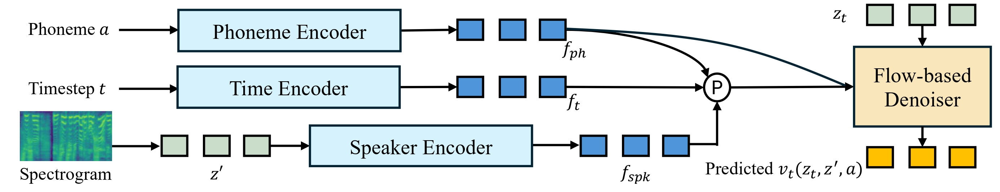

Fox-TTS:
Scalable Flow Transformers for Expressive Zero-Shot Text to Speech
ICLR 2025 Submission
Abstract. Expressive zero-shot text-to-speech (TTS) synthesis aims at synthesizing high-fidelity speech that closely mimics a brief stylized recording without additional training. Despite the advancements in this area, several challenges persist: 1) Current methods, which encompass implicit prompt engineering through in-context learning or by using pre-trained speaker identification models, often struggle to fully capture the acoustic characteristics of the stylized speaker; 2) Attaining high-fidelity voice cloning for a stylized speaker typically requires large amounts of specific data for fine-tuning; 3) There is no benchmark tailored for the expressive zero-shot TTS scenarios. To address them, we present Fox-TTS, a family of large-scale models for high-quality expressive zero-shot TTS. We introduce an improved flow-matching Transformer model coupled with a novel learnable speaker encoder. Within the speaker encoder, we incorporate three key designs: temporal mean pooling, temporal data augmentation, and an information bottleneck used for trading off pronunciation stability and speaker similarity in an explainable manner. Moreover, we have collected Fox-eval, the first multi-speaker, multi-style benchmark that is specially designed for expressive zero-shot scenarios. Extensive experiments show that Fox-TTS achieves on-par quality with human recordings in normal scenarios and state-of-the-art performance in expressive scenarios.
Model Overview

Figure 1. An overview of the proposed flow-matching model Fox-TTS. The symbol "P" represents the mean pooling operation. The flow-based denoiser is subject to conditioning in two distinct yet complementary ways: First, it temporally interfaces with the phoneme sequences via a cross-attention mechanism, ensuring that the temporal dynamics of the input text are effectively captured. Second, it gets the global conditional signals through adaptive layer normalization (AdaLN), in which all the external conditions are fused.
Expressive Zero-Shot TTS on Fox-eval
Fox-eval: The first multi-speaker, multi-style benchmark tailored for expressive zero-shot TTS.
Speaker Domain
Prompt
Generated Sample 1
Generated Sample 2
Generated Sample 3
Role-Playing
今晚是欢迎我的，我们只管喝酒，谁要再胡说八道，再搞内讧，我建议劝其退出中闲委。
特别是早晨，跑出门，首先看到的就是天高云淡的晴空。
我现在一肚子火，喝水有什么用。
当即气死了白家老爷子，没了支撑，那些人才有机可乘，如今竟被他三言两语一笔带过。
可南府是本侯的家，你诬陷南府，就是诬陷本侯。
岂止是不感兴趣，说是厌恶都不为过。
Cartoon
现在都报警了，她这也没有必要做什么了。
我就不认识了，你百度一下，我看剧不记演员的。
此书登上了纽约时报畅销榜的首位。
以大德铸魂、公德善心、品德润身，就能激发出更多向上向善的力量。
最近爆火的开端也是他们的剧呢。
换成等量的牌，搭配一些存牌的人物，牌会越来越多。
Outdoor Interview
第二天，河南省公安厅专家来到现场。
最后，历史和经验都在向我们证明，和平与发展是相辅相成、互为前提的。
她就寻思着，如果打印机能专门打印错题就太完美了。
当年，他没能把星青冥从那黑衣使者的手中救回来，那心里满是愧疚啊。
在此提醒大家:道路千万条，安全第一条。
如果你不想随波逐流，就只能自己做出改变，努力改变自己的未来了。
Stylized
请广大市民注意个人卫生，做好自我健康监测，不信谣，不传谣。
挺好的呀，毕竟人家是专业人士嘛，我之前就找过。
真不知道怎么想的，那些人真的不至于帅得让人没有理智。
这话直到今天，我才深有体会。
就像当初偷看她那样，想她知道你看她又怕她知道。
我正相反，我觉得可口可乐比较好喝。
TV Show
他一生的作品就很多，而且诗风独特，富有诗境。
看你日常穿着也比较时尚，你会特别关注一些品牌嘛？
如果初步的成本预测结果不理想，那么设计项目有可能永远不会启动。
事实证明，能够长期靠复利实现资金不断增长的，基本上都是投资者。
生长素是一种信息分子，起调节作用，不能直接参与植物的新陈代谢。
这样在不知不觉中，人们在素食时就摄入了大量的油脂和添加剂，人就容易发胖。
Monologue
这个我不太了解，考公和考研都挺难的。
要全力推进城乡融合，全面提升统筹城乡区域发展水平。
在书中作者介绍了一些交朋友的方法。
我觉得你应该多看看这样的书，你是一个感性的人。
没关系，我也没跟任何人说过，爷爷年初走的。
主人真是个多愁善感的宝宝呀看来你是想念那段无忧无虑的时光了。
Casual Conversation
班主任是一位女老师，教英语，心地善良、工作严谨。
我现在就是这样穿的，但每天要搭配就有点麻烦。
你这么一说还真有点印象了，是不是土地、水、火、心灵什么的。
保洁和绿化是环境部门的两大主要工作。
你的水杯好大，一天喝这么多水吗？
不是你想的那样，我是在想宫吉他今早上跟我说的那话。
Film Actor
所以后来的传言，说他曾逃往西班牙并在那里做过厨师的工作，是不太可能的。
要求孩子少玩手机的时候，我们尽量不玩手机。
可能就是小时候没玩过长大了比较有兴趣。
我们本来都要发半年奖了今年估计没了吧感觉肯定黄了。
他说道:你姐姐现在不舒服，别打扰她睡觉就成了。
罢了，咱们初来乍到，也不能指望一下子就和人打成一片。
Customer Support
之后双方对于运费中是否包含保险未明确表述。
这种状况是否会长期下去，看看再说吧。
我也想出去玩，可惜还要上班，唉。
对古希腊人的这种做法我还真理解不了一点半点。
风雪山神庙、火并王伦误闯白虎堂、火烧草料场、雪夜上梁山。
上海出台城市更新六大行动方案。
Articulate Speaker
哇，都是我喜欢的人耶，我一定要去看，看完跟你讨论。
湘阴县人民检察院指派检察员谭赞出庭支持公诉。
呦呵，我怎么没想到，没想到你还有点用啊。
原告金信公司的委托代理人丁清辉、被告李某、付某某、冯某某、谢某某均到庭参加诉讼。
余氏心中挣扎了半天，叶嘉也不羞愧，张口就不停地喊。
有的人能为了钱，出卖多年朋友，有的人能为了利，蒙骗骨肉至亲。
| Speaker Domain | Prompt | Generated Sample 1 | Generated Sample 2 | Generated Sample 3 |
|---|---|---|---|---|
| Role-Playing | 今晚是欢迎我的，我们只管喝酒，谁要再胡说八道，再搞内讧，我建议劝其退出中闲委。 |
特别是早晨，跑出门，首先看到的就是天高云淡的晴空。 |
我现在一肚子火，喝水有什么用。 |
|
当即气死了白家老爷子，没了支撑，那些人才有机可乘，如今竟被他三言两语一笔带过。 |
可南府是本侯的家，你诬陷南府，就是诬陷本侯。 |
岂止是不感兴趣，说是厌恶都不为过。 |
||
| Cartoon | 现在都报警了，她这也没有必要做什么了。 |
我就不认识了，你百度一下，我看剧不记演员的。 |
此书登上了纽约时报畅销榜的首位。 |
|
以大德铸魂、公德善心、品德润身，就能激发出更多向上向善的力量。 |
最近爆火的开端也是他们的剧呢。 |
换成等量的牌，搭配一些存牌的人物，牌会越来越多。 |
||
| Outdoor Interview | 第二天，河南省公安厅专家来到现场。 |
最后，历史和经验都在向我们证明，和平与发展是相辅相成、互为前提的。 |
她就寻思着，如果打印机能专门打印错题就太完美了。 |
|
当年，他没能把星青冥从那黑衣使者的手中救回来，那心里满是愧疚啊。 |
在此提醒大家:道路千万条，安全第一条。 |
如果你不想随波逐流，就只能自己做出改变，努力改变自己的未来了。 |
||
| Stylized | 请广大市民注意个人卫生，做好自我健康监测，不信谣，不传谣。 |
挺好的呀，毕竟人家是专业人士嘛，我之前就找过。 |
真不知道怎么想的，那些人真的不至于帅得让人没有理智。 |
|
这话直到今天，我才深有体会。 |
就像当初偷看她那样，想她知道你看她又怕她知道。 |
我正相反，我觉得可口可乐比较好喝。 |
||
| TV Show | 他一生的作品就很多，而且诗风独特，富有诗境。 |
看你日常穿着也比较时尚，你会特别关注一些品牌嘛？ |
如果初步的成本预测结果不理想，那么设计项目有可能永远不会启动。 |
|
事实证明，能够长期靠复利实现资金不断增长的，基本上都是投资者。 |
生长素是一种信息分子，起调节作用，不能直接参与植物的新陈代谢。 |
这样在不知不觉中，人们在素食时就摄入了大量的油脂和添加剂，人就容易发胖。 |
||
| Monologue | 这个我不太了解，考公和考研都挺难的。 |
要全力推进城乡融合，全面提升统筹城乡区域发展水平。 |
在书中作者介绍了一些交朋友的方法。 |
|
我觉得你应该多看看这样的书，你是一个感性的人。 |
没关系，我也没跟任何人说过，爷爷年初走的。 |
主人真是个多愁善感的宝宝呀看来你是想念那段无忧无虑的时光了。 |
||
| Casual Conversation | 班主任是一位女老师，教英语，心地善良、工作严谨。 |
我现在就是这样穿的，但每天要搭配就有点麻烦。 |
你这么一说还真有点印象了，是不是土地、水、火、心灵什么的。 |
|
保洁和绿化是环境部门的两大主要工作。 |
你的水杯好大，一天喝这么多水吗？ |
不是你想的那样，我是在想宫吉他今早上跟我说的那话。 |
||
| Film Actor | 所以后来的传言，说他曾逃往西班牙并在那里做过厨师的工作，是不太可能的。 |
要求孩子少玩手机的时候，我们尽量不玩手机。 |
可能就是小时候没玩过长大了比较有兴趣。 |
|
我们本来都要发半年奖了今年估计没了吧感觉肯定黄了。 |
他说道:你姐姐现在不舒服，别打扰她睡觉就成了。 |
罢了，咱们初来乍到，也不能指望一下子就和人打成一片。 |
||
| Customer Support | 之后双方对于运费中是否包含保险未明确表述。 |
这种状况是否会长期下去，看看再说吧。 |
我也想出去玩，可惜还要上班，唉。 |
|
对古希腊人的这种做法我还真理解不了一点半点。 |
风雪山神庙、火并王伦误闯白虎堂、火烧草料场、雪夜上梁山。 |
上海出台城市更新六大行动方案。 |
||
| Articulate Speaker | 哇，都是我喜欢的人耶，我一定要去看，看完跟你讨论。 |
湘阴县人民检察院指派检察员谭赞出庭支持公诉。 |
呦呵，我怎么没想到，没想到你还有点用啊。 |
|
原告金信公司的委托代理人丁清辉、被告李某、付某某、冯某某、谢某某均到庭参加诉讼。 |
余氏心中挣扎了半天，叶嘉也不羞愧，张口就不停地喊。 |
有的人能为了钱，出卖多年朋友，有的人能为了利，蒙骗骨肉至亲。 |